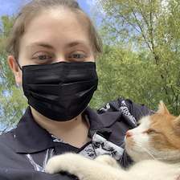
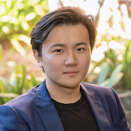
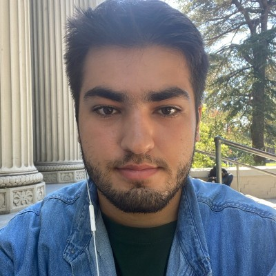
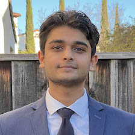
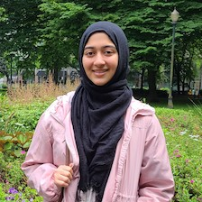
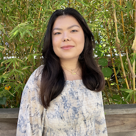
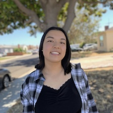

Officers
Executive Board Fall 2023
Sofia Theodoras (she/her) - [Co-President] LinkedIn
is a junior studying Molecular and Cell Biology (Immunology track) and Computer Science who is interested in immunology and genetics. Last summer, she interned at Upside Foods, recently becoming the first FDA and USDA approved cultivated (cell culture) meat company, and as an undergraduate researcher in the Conboy Lab, she investigates stem cell biology and the mechanisms of aging. Come talk to me if you want to chat about how lab equipment is just extra expensive cookware!
Heyuan (Michael) Ni (he/him) - [Co-President] LinkedIn
is a fourth-year student enrolled in UC Berkeley's Robinson Life Science, Business, and Entrepreneurship program. He is pursuing a triple major in Molecular & Cell Biology, Data Science, and Business Administration, with a particular focus on bio-entrepreneurship. His ultimate goal is to leverage his own research to bring about transformative changes in fundamental aspects of life, such as food, water, and healthcare.Throughout his academic journey, Michael has gained research experiences in synthetic biology, nanotechnology, and host-pathogen interaction studies at iGEM at Berkeley (current), the Markita Landry Lab (previous), and the Sarah Stanley Lab (current) respectively. In early 2023, Michael founded Utero Diagnostics and is currently scaling up the startup while applying for PhD programs. His ultimate goal is a career in academia, where he can explore the intersection of biology and business, continuously pursuing entrepreneurial opportunities to bridge scientific advancements with practical implementation.
Sabrina Fong (she/her) - [Co-President] LinkedIn
is a MCB major researching abnormal metabolisms in cancer, senescence, and fibrosis in the Conboy Lab. She is interested in business development within the biotech/biopharma space. When not hanging out with people from TMSCA, she enjoys reading, sketching, and trying new food!
Committee Coordinators
Vitto Resnick (he/him) - [Academia Committee Coordinator] LinkedIn
is a senior at UC Berkeley majoring in ChemBio (conc. in Computational Chem), Psych, MCB - Neurobiology, and NST - Physiology & Metabolism. He works in the Flannery Lab @ HWNI and in the NSDS/Bouchard Lab for Lawrence Berkeley National Lab. In the former, he is doing his MCB senior thesis project on characterizing three novel synthetic opsins for optogenetic vision restoration in mouse models of retinal degeneration using AAV vectors. In the latter, he is creating a complex stimulus and analyzing ECoG data to understand how complex natural sounds (prey, predator, etc.) are encoded in the primary auditory cortex in rats. Outside of lab, he likes tennis, powerlifting, studying foreign languages, and poetry.
Neel Patel (he/him) - [Academia Committee Coordinator] LinkedIn
is a Microbial Biology major at UC Berkeley and is a research assistant at GBSMRC. In his free time, he enjoys traveling, sports, and the outdoors.
 Debora Ghosh (she/her) - [Academia Committee Coordinator] LinkedIn
Debora Ghosh (she/her) - [Academia Committee Coordinator] LinkedIn
is a third-year student majoring in Molecular and Cell Biology - Neurobiology and minoring in Nutritional Sciences. Her research interests lie in neurosurgery, neuroscience, particularly synaptic integration in the hippocampus, Alzheimer’s Disease, and oncology. She has worked alongside neurosurgeons and gynecologists, working on case reports and papers and is an Undergraduate Research Assistant in a neurobiology lab at Berkeley. She is currently a Clinical Research Coordinator at UCSF’s addiction clinic and a member of ASUC’s Health Advocacy Committee, envisioning reducing health inequities while pursuing clinical research. Debora has also been a Teaching Assistant in a Math course at Berkeley and currently works as Math Tutor through her university’s tutoring center. Debora spends her time scribing at a community health clinic and volunteering at her university health center. In her free time, she enjoys weightlifting and cooking high protein meals! She intends to pursue an MD to further pursue her interests in medicine while serving her community and working towards reducing the prevalence of neurodegenerative diseases.
Danya Hassan (she/her) - [Education Committee Coordinator] LinkedIn
is a 4th year majoring in Molecular and Cell Biology. She enjoy spending time in the Landry Lab, where she works on lipid nanoparticle synthesis and delivery of genetic engineering tools. Outside of campus and lab she likes hanging out with her friends, going to the RSF, reading, and watching new movies.
Huma Arifi (she/her) - [Events Committee Coordinator] LinkedIn
is a second-year student pursuing a Bachelor of Arts in Molecular & Cell Biology, Development & Physiology, and minoring in Public Health. She joined TMSCA as a freshman because she was interested in Stem Cells, Transitional Medicine and getting involved in research and labs at Berkeley. Her career goal is pursuing a career in medicine and being able to help people and make a difference in our society. Her hobbies include outdoor activities, exploring new places and trying different food.
Officers
 Halime Yilmaz (she/her) - [Social/PR Chair] LinkedIn
Halime Yilmaz (she/her) - [Social/PR Chair] LinkedIn
is a Chemical Biology and Toxicology Major, who does research in proteomics with the Nomura Lab. My hobbies include drawing, hiking or doing yoga, and cafe hoping!
Tiffany Lei (she/her) - [Financial/External Relations Officer] LinkedIn
is a Molecular and Cell Biology major with an emphasis in Cell Biology, Development & Physiology. She is also minoring in Data Science. Her current research interest at the DenBesten Lab @ UCSF is focused on oral health, especially how environmental factors and maternal health can impact enamel formation. During my free time, she enjoys binging TV shows and going for walks in nature.